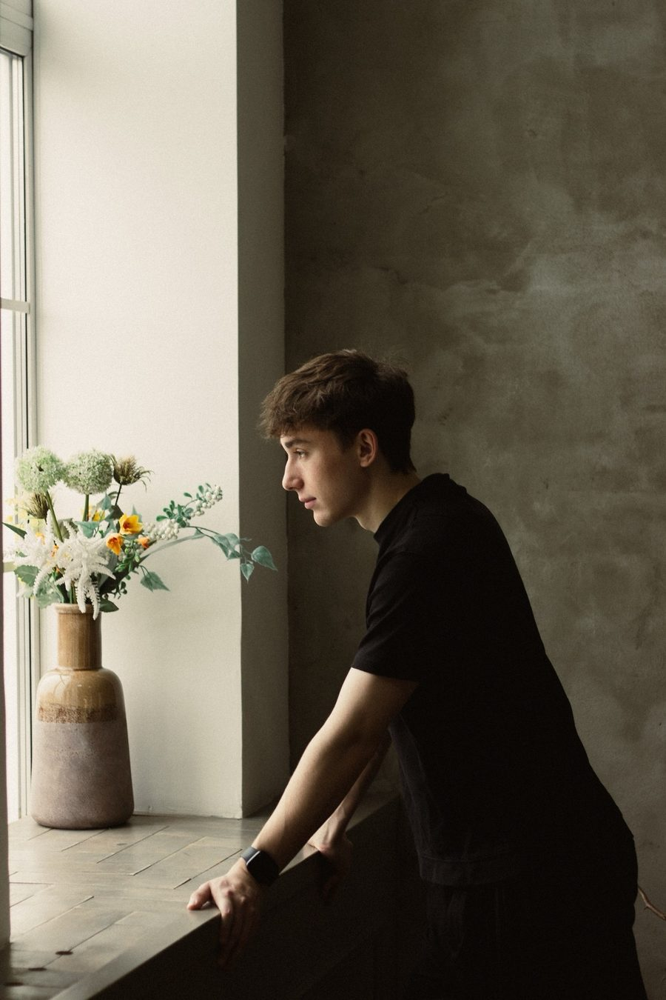

Яндекс Директ
Поиск, РСЯ и Мастер кампаний. Собираю семантику, делю кабинет по услугам и гео, настраиваю цели и оптимизацию по конверсиям.
- Аудит и запуск с нуля
- Ведение и масштабирование
- Ретаргетинг и брендовый трафик
Директолог · Яндекс Директ · Авито · Telegram
Привожу клиентов из Яндекс Директа, Авито Рекламы и Telegram. Снижаю цену заявки и поднимаю качество трафика: в медицине, B2B и B2C.
Что делаю
Поиск, РСЯ и Мастер кампаний. Собираю семантику, делю кабинет по услугам и гео, настраиваю цели и оптимизацию по конверсиям.
Анализ конкурентов, объявления, стратегия продвижения. Работает там, где клиент уже готов покупать — от лодок до земельных участков.
Веду трафик из Яндекса в канал или бота: настраиваю оффлайн-конверсию на подписку, автоперебросы и тестирую креативы.
Кейсы
Цена заявки = бюджет месяца с НДС ÷ число заявок. Выберите кейс.
Яндекс Директ · Премиум-сегмент · 2 месяца работы
Загородный яхт-клуб «Фарватер», Московская область: площадка для мероприятий, ресторан, отель, SPA и яхт-клуб.
Заявки от состоятельных клиентов. Высокая конкуренция и узкая аудитория: прогноз цены лида на старте был от 5 000 ₽.
* Ориентировочно: 29 мероприятий × средний чек 800 000 ₽. Данные за 2 месяца работы. Бренд в поиске: CTR 21,5%. Звонки отслеживались через Calltouch.
Яндекс Директ · B2B-производство · март–сентябрь 2026
ОКБ «Квалитет»: производство металлоконструкций, Москва, доставка по России.
Узкий спрос и дорогой клик на поиске: 100–225 ₽ за переход по отдельным услугам. Нужны заявки именно от B2B-заказчиков.
Бюджет: 702 223 ₽ с НДС · 575 тыс. показов · 22 984 клика. Цена заявки снижалась каждый месяц с марта по август.
Яндекс Директ · Медицина · апрель–сентябрь 2026
Клиника доктора Ивашкова, Москва. Лимфостаз и липедема: диагностика, хирургия, терапия, реабилитация.
Запустить и масштабировать поток заявок по всем направлениям клиники, в чувствительной медицинской нише с ограничениями в рекламе.
Апрель — тестовый запуск. Бюджет: 466 463 ₽ с НДС · 1,35 млн показов · 32 763 клика. Главный источник: РСЯ по диагностике лимфостаза, 6 048 кликов по ~6,6 ₽.
Яндекс Директ · Медицина · 7 месяцев работы
Частный пластический хирург, Москва: ринопластика, подтяжка лица, блефаропластика. Операции в премиальной клинике.
Стабильный поток заявок на консультацию в нише с высокой конкуренцией и ограничениями в рекламе, при недельных бюджетах.
Бюджет: 380 803 ₽ с НДС · 1,07 млн показов · 37 036 кликов. Самый массовый источник — РСЯ по аудитории конкурентов: 26 515 кликов по ~3,4 ₽.
Яндекс Директ · Косметология · март–сентябрь 2026
Amour du Soleil (ранее «Бейсик Бьюти»), Москва. Две локации: Коммунарка и Юго-Запад.
Стабильные заявки по низкой цене в высококонкурентной бьюти-нише Москвы: не переплачивать за клик и привлекать целевых клиентов рядом с клиникой.
Бюджет: 315 783 ₽ с НДС · 673 тыс. показов · 22 048 кликов. Брендовая кампания: CTR 13,2%. РСЯ по косметологии: 2 920 кликов по ~6,1 ₽, самый дешёвый трафик.
Яндекс Директ → Telegram · август–сентябрь 2025
Канал «Крипто Империя» (13,8 тыс. подписчиков): заработок на арбитраже и продажа обучения через лид-магнит.
Привлечь живых подписчиков в Telegram-канал и продавать обучение арбитражу через лид-магнит. Реклама криптовалют в Директе ограничена.
Месячные значения — из отчётов по первому и последнему месяцу работы (август: 42 905 ₽, сентябрь до 16-го числа: 30 658 ₽). За весь период: 258 конверсий, 281 ₽ за конверсию.
Яндекс Директ и Авито Реклама: ниши от доставки и мебели до недвижимости и инфобизнеса. Цифры из кабинетов.
1 766 заказовцена квал. лида ~300 ₽
Доставка суши и пиццы по Москве, у владельца 11+ точек. Дешевле, чем рассчитывал клиент.
363 заявкипо ~961 ₽ за 4 месяца
РСЯ на квиз и шоурум, Москва и область. Трафик идёт на Marquiz, ноябрь 2025 — февраль 2026.
лид 950 ₽квал. лид 2,7 тыс. ₽ в феврале (Директ)
Продажа участков в Москве и области. Сначала вёл на лендинг, затем на многостраничный сайт.
1 861 конверсияпо 49 ₽, март–октябрь 2025
Новосибирский предприниматель, который рассказывает, как зарабатывать на крипте. Много лендингов и воронок, трафик в Telegram-канал.
553 конверсиив подписку и старт бота в Telegram
Трафик на сайт школы и в Telegram-пост с лид-магнитом, декабрь 2025 — март 2026.
14 лидовпо ~714 ₽, квал. лид 2 500 ₽
Краудфандинговая платформа, задача — качественные лиды. Лучший период: 22–31 января 2026.
ROI 920%каждый рубль принёс почти 10 ₽
Лодки для мелководья. Небольшой бюджет, быстрая окупаемость.
Полные отчёты за всё время работы и презентации по остальным проектам.

Обо мне
Опыт в маркетинге — более 2 лет. Работаю с действующими проектами, где важны результат, стабильность и масштабирование, а не разовые настройки. Есть опыт в медицине, B2B и B2C.
В работе: анализирую рынок и конкурентов, подбираю рекламные стратегии, постоянно слежу за показателями и оптимизирую кампании, снижаю стоимость заявки и повышаю качество трафика.
Обсудить проектКак работаю
Разбираю продукт, аудиторию, конкурентов и ваши цели по заявкам и цене.
Выбираю каналы и стратегию, настраиваю цели, колтрекинг и сквозные отчёты.
Собираю семантику, делю кабинет по услугам и гео, запускаю кампании и креативы.
Постоянно слежу за показателями, тестирую гипотезы, отключаю слабые связки.
Регулярные понятные отчёты, затем масштабирую то, что работает.
Почему я
Работаю с действующими проектами, где важны результат, стабильность и масштабирование, а не разовые настройки.
Медицина, B2B, B2C, инфобизнес, недвижимость, доставка. Понимаю, чем различаются заявка, квал. лид и продажа.
Все кейсы подкреплены скриншотами кабинета и отчётами по месяцам. Считаю по бюджету с НДС.
Гипотезы каждый месяц: в кейсах до 89 кампаний в работе, слабое отключаю, бюджет переношу в рабочее.
Вопросы
Короткий бриф: что продаёте, кому, в каком регионе и какая заявка для вас считается хорошей. Если есть сайт и доступ к Метрике или рекламному кабинету — отлично. Нет — настроим всё с нуля.
Первые заявки приходят после запуска, но стабильную цену заявки получаем за счёт оптимизации. Ровно так и было в кейсах: стартовые месяцы — тест и поиск связок, дальше — снижение цены и рост объёма. Гарантировать конкретную цифру заранее честно нельзя, поэтому считаем по вашей нише на брифе.
Медицина и пластическая хирургия, бьюти, B2B-производство, премиум-услуги, недвижимость, доставка, онлайн-обучение, краудфандинг, товары на Авито, Telegram-каналы.
Подключаю цели и колтрекинг (Calltouch), считаю не только заявку, но и квалифицированный лид, и по возможности — подтверждённые продажи или брони.
Нет: Яндекс Директ, Авито Реклама и трафик из Яндекса в Telegram (каналы и боты). Подберём канал под вашу задачу.
Контакты
Напишите коротко, что продаёте и где хотите получать заявки. Отвечу в мессенджере и предложу следующий шаг.
Отправляя сообщение или оставляя заявку, вы соглашаетесь с политикой обработки персональных данных и согласием на обработку персональных данных.